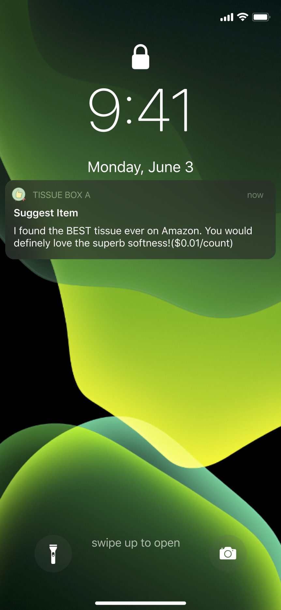
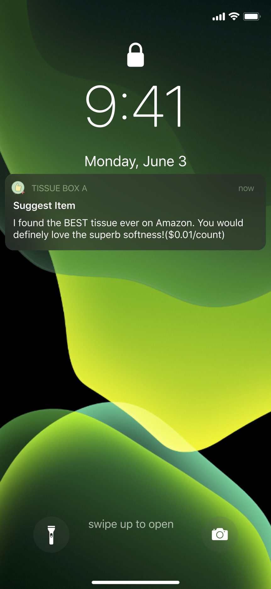

5in5 Prototype 01
WEEK 6 - THU, FEB 27TH, 2020Guiding Question:
- What if product have their own intents on resources, work, time and etc.?
- What if we share some power of decision with our daily objects?
Concept
Instead of stock tissue in our home unintendedly, we buy “smart tissue case” base on our level of consumption and amount of budget, and they will manage and suggest our usage and purchase. Some tissue cases are spendthrift and they only want to hold tissue of best quality, while some of them are thriftier who will search online for tissues of discounts.
How would these product with intents change our behavior?
Are the products become service in this way? What if we share/adopt instead of owning/buying a product？
Prototype
The Thrifty Tissue Box
 
